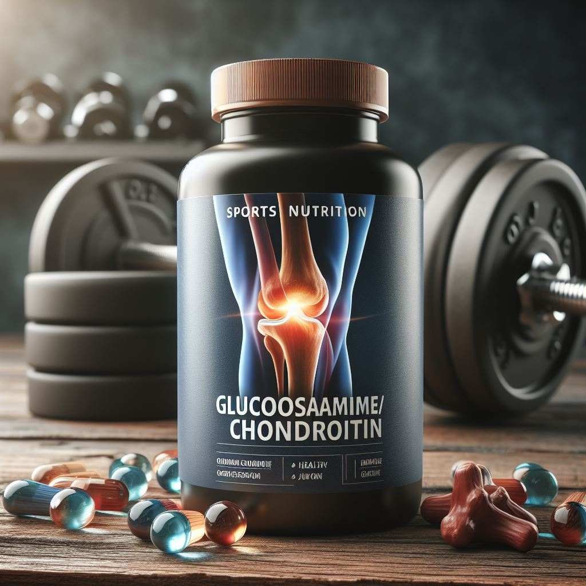

Глюкозамин/хондроитин
Глюкозамин и хондроитин — это два важных компонента, которые оказывают положительное воздействие на здоровье суставов и хрящей. Давайте рассмотрим их свойства подробнее:
1) Глюкозамин:
- Глюкозамин — это вещество, вырабатываемое хрящевой тканью суставов.
- Он является компонентом хондроитина и входит в состав синовиальной жидкости.
- Глюкозамин делает суставы и хрящи прочнее и эластичнее, предупреждает воспаления и снижает болевые ощущения.
- Участвует в образовании синовиальной жидкости, обеспечивая естественную смазку суставов.
2) Хондроитин:
- Хондроитин — один из компонентов наших костей, хрящей и суставов.
- Он удерживает влагу в хрящах и стимулирует выработку синовиальной жидкости.
- При дефиците хондроитина хрящевая ткань деформируется, уменьшается в размерах, теряет прочность и эластичность.
- Снижается выработка синовиальной жидкости, что ощущается при движении.
Важно! Если вы планируете включить глюкозамин/хондроитин в свой рацион, обязательно проконсультируйтесь с врачом и тренером, чтобы выбрать подходящий продукт и дозировку. Помните, что индивидуальные потребности могут различаться, и важно следовать рекомендациям специалистов.
Теперь вы знаете больше о глюкозамине/хондроитине! Если вас заинтересовал данный продукт, переходите по кнопке "Просмотр продукции" и подбирайте товар для себя!